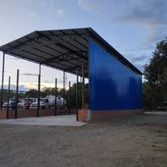

Electrodo revestido
Versátil para estructuras, reparaciones y trabajos de montaje o mantenimiento en campo.
También puede usarse en reparaciones residenciales, si el trabajo lo permite.Fabricación · Mantenimiento · Servicios petroleros · Neiva
Diseño, fabricación y montaje para hogares, comercios e industria en Neiva y el Huila. Mira el trabajo de ANCO y cuéntanos qué necesitas.
Entra por la ruta que mejor corresponde a tu necesidad.

Fabricación a la medida · Neiva y Huila
Atendemos proyectos de hogar, comercio e industria con diseño, fabricación y montaje definidos según cada necesidad.
Guía rápida · Procesos de soldadura
No existe un proceso exclusivo para la industria y otro para el hogar. Se elige según el material, el espesor, la unión, la posición, el acabado y las condiciones del proyecto.
Versátil para estructuras, reparaciones y trabajos de montaje o mantenimiento en campo.
También puede usarse en reparaciones residenciales, si el trabajo lo permite.Favorece la continuidad en muchos trabajos de fabricación en taller, desde estructuras hasta marcos y rejas.
En alambre sólido, el gas de protección y las condiciones del sitio importan.Puede ser una opción cuando se necesita control fino, por ejemplo en inoxidable o piezas de menor espesor.
El material, la geometría y los requisitos definen si conviene usarlo.En estructuras, montajes, mantenimiento y componentes para petróleo, la selección depende de los planos, el material, el espesor, la posición, el acceso y las condiciones de servicio. SMAW puede ser útil en ciertas labores de campo; MIG/MAG, en fabricación de taller; TIG, cuando el material o el nivel de control lo requieren.
Puertas, rejas, escaleras, divisiones y fachadas pueden fabricarse en taller o instalarse en sitio. El material, el espesor, el acabado y el lugar de trabajo orientan la elección: MIG/MAG suele ser práctico en fabricación de taller; SMAW puede servir para algunos montajes y reparaciones; TIG se reserva para aplicaciones que requieren ese control.
*Ejemplos orientativos, no una regla fija. ANCO define el proceso y los consumibles al revisar el material, el espesor, la junta, la posición y los requisitos técnicos de cada proyecto.
Consultar un trabajo de soldaduraTrabajos · Referencias visuales
Una selección de imágenes del material disponible. Las fichas y fotografías se completarán con información confirmada antes de publicar.

01 / ESTRUCTURASFabricación para obra 02 / SERVICIO EN CAMPOAtención en sitio
02 / SERVICIO EN CAMPOAtención en sitio
 03 / INDUSTRIADrum para Wireline
03 / INDUSTRIADrum para Wireline
ANCO en movimiento
Videos del taller y de las soluciones de ANCO. La galería reúne los archivos disponibles y enlaza al perfil de Instagram.
Explorar videosIndustria · Especialidad petrolera
Fabricamos drums nuevos y reparamos carretes existentes. El núcleo y las bridas se definen de acuerdo con el cable y la configuración de la unidad.
Para iniciar: comparte tipo de unidad, cable, radio mínimo y si necesitas fabricación o reparación. Puedes adjuntar plano o fotografía en el chat.
Cotizar un drum
01 · Industria y petróleo
Integramos diseño, fabricación, soldadura, mantenimiento y montaje de acuerdo con el alcance de cada proyecto.
Fabricación de estructuras, cubiertas, spools y piezas especiales a medida.
Ver referencias ↓Procesos para estructuras, reparación, fabricación y trabajos en acero inoxidable.
Consultar servicio ↗Desarrollamos dibujos y modelos para revisar la solución antes de llevarla al taller.
Ver proceso ↓Atención de equipos, componentes y trabajos metalmecánicos en taller o en campo.
Consultar servicio ↗Coordinamos fabricación e instalación según las condiciones del sitio y los requisitos del trabajo.
Cuéntanos el alcance ↓Fabricación y reparación de carretes como parte de nuestra línea industrial.
Ver especialidad ↓02 · Hogar y comercio
Fabricación a medida para viviendas, locales y proyectos comerciales, con acompañamiento desde las medidas hasta la instalación.
Diseño y fabricación a medida para el acceso y la protección de tu espacio.
Estructuras funcionales para vivienda, comercio y obra.
Estructuras metálicas para espacios comerciales con soluciones en vidrio.
Cuéntanos la idea; revisamos medidas, materiales y opciones de fabricación.
Cómo trabajamos
Un proceso claro ayuda a definir la solución, revisar el alcance y mantener al cliente informado en cada etapa.
Comparte medidas, fotos, planos, materiales y ubicación del trabajo.
Revisamos los requisitos y, cuando aplica, preparamos un diseño o modelo 3D.
Realizamos el trabajo según el alcance técnico acordado y los controles requeridos.
Coordinamos la entrega, el montaje y la documentación correspondiente al proyecto.
Videos · ANCO
Una primera selección local con los videos disponibles en la carpeta del sitio. Para ampliar la galería, añadimos aquí los siguientes Reels publicados por ANCO.
Video de ANCO disponible en el material del sitio.
Clip corto para ver el trabajo de la marca en formato social.
Portafolio · Fichas preliminares
Estas fichas organizan referencias visuales del material existente. Antes de publicar como casos, completar alcance, ubicación, medidas y evidencia de cada trabajo.
Foto de referencia · 01Servicios petroleros
Fabricación de drums nuevos o reparación de carretes. El núcleo se define según el radio mínimo del cable y la configuración de la unidad.
Preliminar · Añadir requisitos del cliente, inspección y fotos finales verificables.
Estructuras
Estructuras y cubiertas metálicas diseñadas de acuerdo con las medidas y condiciones del sitio.
Preliminar · Precisar dimensiones, montaje y alcance ejecutado con el cliente.
Foto de referencia · 03Servicio en campo
Atención de trabajos de fabricación, mantenimiento o montaje bajo las condiciones definidas para cada intervención.
Preliminar · Identificar equipo, intervención, ubicación y registro fotográfico final.
Calidad y respaldo
Definimos materiales, proceso, medidas y alcance con el cliente. Para trabajos que lo requieran, la documentación y los controles se acuerdan según las especificaciones del proyecto.
El alcance de inspección y los documentos que se entreguen se acuerdan con base en los requisitos aplicables y los soportes vigentes para cada trabajo.
Consultar requisitos técnicosAntes de cotizar, reúne la información disponible para orientar mejor la propuesta.
Hablemos de tu proyecto
Completa los datos y abriremos WhatsApp con un mensaje listo para ANCO. También puedes escribir directamente o enviar tus planos al correo.